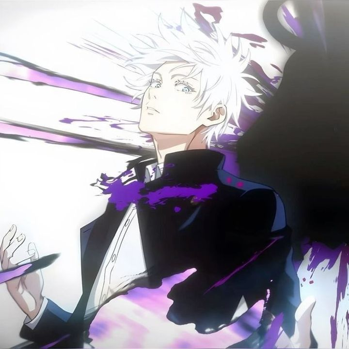

Os 3 Favoritos
Conheça um pouco sobre os meus 3 personagens favoritos!


Esses três personagens são meus favoritos por suas características únicas, personalidades marcantes e histórias envolventes. Cada um deles se destaca de uma forma diferente, seja pela inteligência, força, estratégia ou pela maneira como enfrentam seus desafios. Além disso, suas atitudes e desenvolvimento ao longo de suas histórias tornam eles ainda mais interessantes e inspiradores.